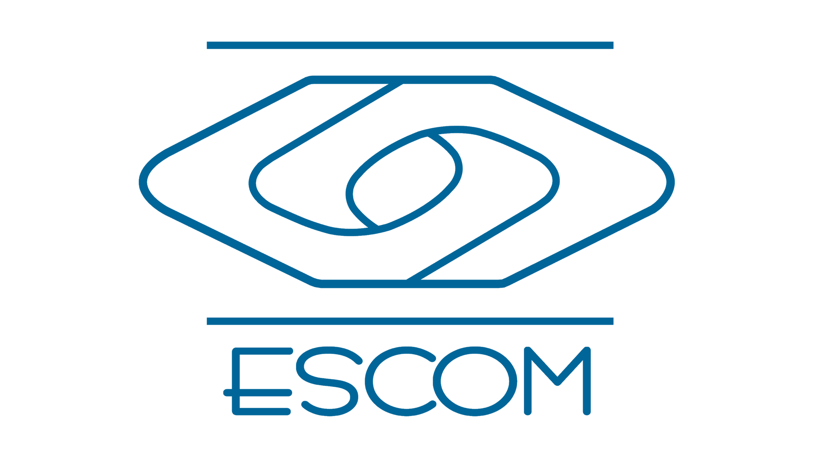

INSTITUTO POLITÉCNICO NACIONAL
ESCUELA SUPERIOR DE CÓMPUTO
SUBDIRECCIÓN DE SERVICIOS EDUCATIVOS E INTEGRACIÓN SOCIAL
DEPARTAMENTO DE EXTENSIÓN Y APOYOS EDUCATIVOS
Jornada de Inducción para los estudiantes de nuevo ingreso, agosto 2024
Sede: Auditorio de la ESCOM
